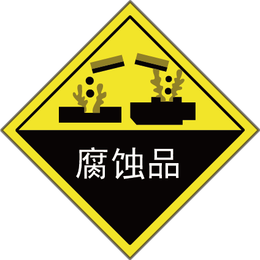
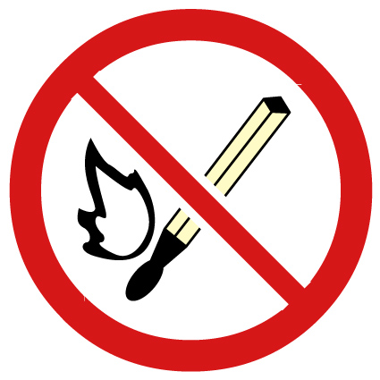
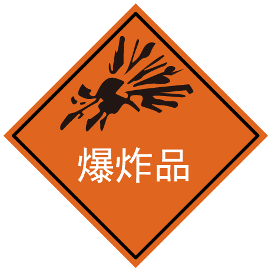
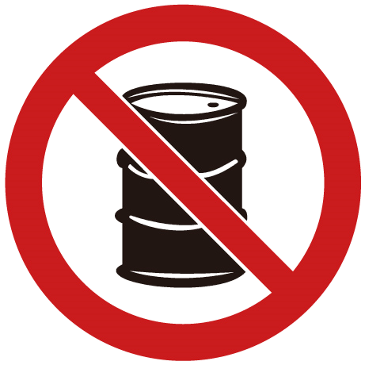
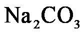
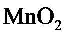

2024年北京市中考化学真题 · 选择题 第6、7、8、9、10题 · 对应解析
6. 为防治大气污染，下列做法不可行的是
A. 加强扬尘管控B. 使用清洁能源
C. 直接排放工业废气D. 加强大气质量监测
【答案】C
【解析】
【详解】A、加强扬尘管控，可以减少空气污染，保护环境，不符合题意；
B、使用清洁能源，可以减少化石燃料的使用，减少污染物的排放，保护环境，不符合题意；
C、直接排放工业废气，会污染空气，符合题意；
D、加强大气质量监测，可以减少空气污染，保护环境，不符合题意。
故选C。
7. 粗盐中难溶性杂质的去除实验中，蒸发滤液不需要用到的仪器是
A. 蒸发皿B. 酒精灯C. 玻璃棒D. 量筒
【答案】D
【解析】
【详解】蒸发所需仪器为：铁架台、酒精灯、蒸发皿、玻璃棒，无需量筒。
故选D。
8. 下列标志表示“禁止烟火”的是
A.

B.
C.
D.
【答案】B
【解析】
【详解】A、该标志是腐蚀品标志，不符合题意；
B、该标志是禁止烟火标志，符合题意；
C、该标志是爆炸品标志，不符合题意；
D、该标志是禁止放易燃物标志，不符合题意。
故选B。
9. 下列物质混合后产生白色沉淀的是
A.

溶液和 溶液B.
溶液B.  溶液和
溶液和
C. NaOH溶液和稀硫酸D.  溶液和稀盐酸
溶液和稀盐酸
【答案】A
【解析】
【详解】A、碳酸钠和氢氧化钙反应生成碳酸钙和氢氧化钠，产生白色沉淀，符合题意；
B、过氧化氢在二氧化锰的催化下分解生成水和氧气，产生气泡，不符合题意；
C、氢氧化钠和稀硫酸反应生成硫酸钠和水，无明显现象，不符合题意；
D、碳酸氢钠和稀盐酸反应生成氯化钠、二氧化碳和水，产生气泡，不符合题意。
故选A。
2024年6月，嫦娥六号完成世界首次月背采样，五星红旗在月背成功展开。
10. 嫦娥六号探测器钻杆主体采用铝基碳化硅材料。铝、碳、硅是三种不同的元素，决定元素种类的是
A. 质子数B. 中子数C. 核外电子数D. 相对原子质量
【答案】A
【解析】
【详解】元素是具有相同质子数（即核电荷数）的一类原子的总称；铝、碳、硅是三种不同的元素，决定元素种类的是质子数。
故选A。